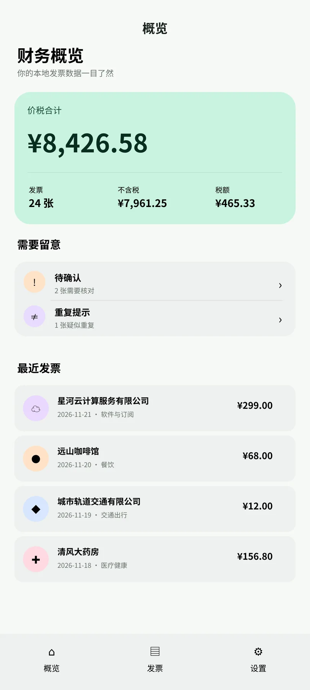
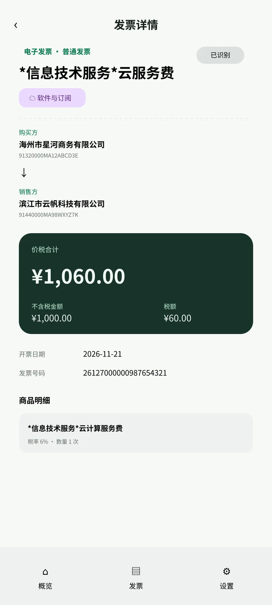

核心功能
- 导入 PDF、Android 可解码图片与电子发票 XML
- 中文 OCR 与 PDF 文本层提取
- 本地 Room 数据库、查重、搜索与分类
- 原件预览及 CSV/完整归档导出
- 用户配置的 WebDAV 备份、校验与恢复
- 浅色、深色和大屏布局

归档个人发票、查找记录、检查重复、导出副本，或主动备份到 WebDAV。
发票可能含敏感身份和账户信息。默认本地处理与保存；仅在你主动使用 WebDAV、导出或分享时离开应用私有目录。WebDAV 凭据由 Android Keystore 保护。
OCR 与字段解析可能出错，重要字段须人工核对；部分地区、版式或加密 PDF 可能无法识别。WebDAV 兼容性取决于服务端。本应用不是财税、会计或报销合规服务；卸载可能删除本地数据。




請只從下方官方渠道安裝。